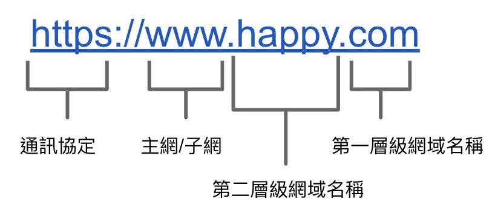
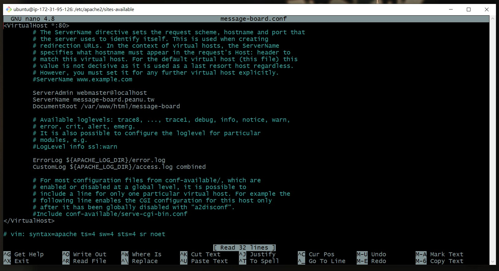
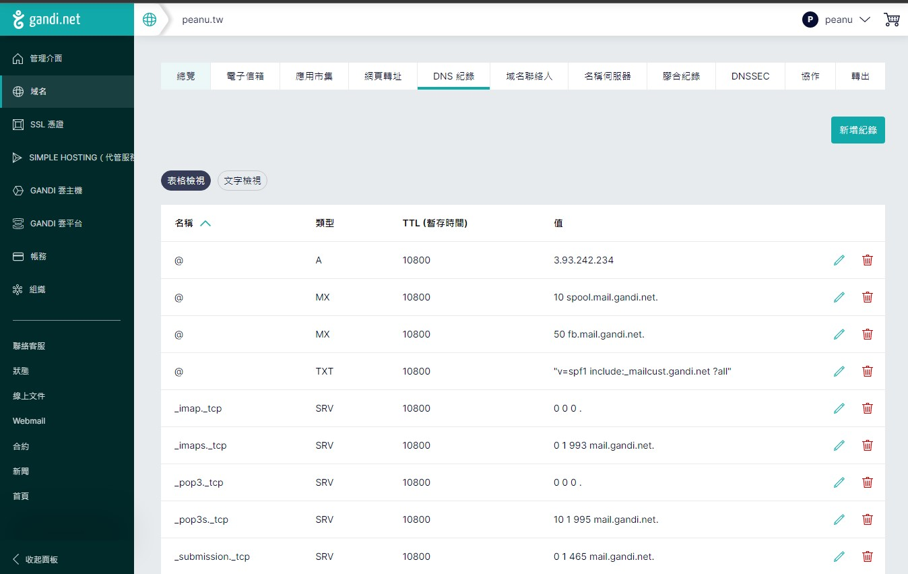
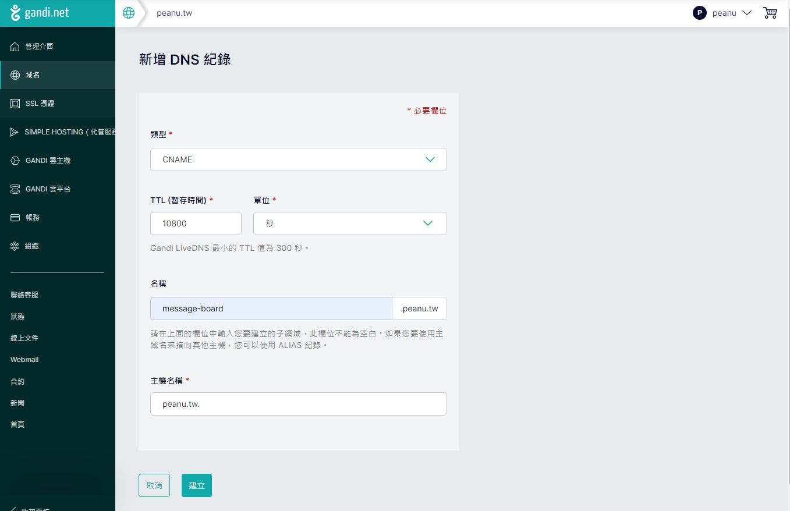

紀錄一下。
簡述
在交怎麼設之前，先介紹一下什麼「子網域」和「子目錄」的差別：
http://peanu.tw/message-board
這種透過 /資料夾 的網址就叫做子目錄。
http://message-board.peanu.tw
這種在 peanu 前面加上 message-board 的網址就叫做子網域。
至於這兩種有什麼差？可以參考這篇：子網域好還是子目錄好？架設部落格、新網站必備評估
另外再補充一下，關於「網址的層級」，可以先參考這張圖：

看網址的順序要「由後往前看」，以 http://message-board.peanu.tw 來說：
tw是第一層網域名稱，可替換成orgcom之類的peanu是第二層網域名稱，就是你買網域的時候自己挑的部分message-board是子網域http代表 HTTP 這個協定
OK，有這個基礎知識後就可以來談要怎麼設定了。
要設定子網域得做兩件事：
- 去虛擬主機（我是 Ubuntu）修改 Apache Vitural Host 的內容
- 去買網域的地方重新設定
修改 Apache Vitural Host
連到你的主機後，先移動到這個地方，裡面會放 vitural host 的設定檔：
1 | cd /etc/apache2/sites-available/ |
用 ls 後會看到 000-default.conf，這個是預設的設定檔。我們要拿它來寫一份新的，所以複製一份並命名為 message-board.conf：
1 | sudo copy 000-default.conf message-board.conf |
接著打開設定檔來修改：
附註：nano 是一個 Unix 系統的文字編輯器
1 | sudo nano message-board.conf |
打開來會像這樣：

我一開始打開也想說這啥？vim 的突變種？
但仔細看會發現幾乎都是 ^ 開頭，而 ^ 代表 Ctrl 鍵，所以 ^G = Ctrl + G ，這樣應該會用了吧？
接下來要設定的地方只有兩個：
- ServerName
<你想要的網址> - DocumentRoot
<網址對應到的路徑>
不太懂得話你就參考上面的圖片，抄它的內容就好了。
改完以後記得存檔，然後要輸入一段指令來啟用它：
1 | sudo a2ensite restaurant.conf |
看到回傳 Enabling site message-board. 就代表成功了。
設定完後要重新啟動 Apache2：
1 | sudo service apache2 restart |
Apache 的部分到這邊就 OK 囉。
重新設定網域
我的網域是在 gandi 買的，所以這邊拿它來說明。
- 按下新增紀錄

- 設定內容
名稱的部分就是「子網域」，主機名稱則是「網域名稱」（記得結尾要加上 .）

按下建立後就成功了。接著就能用 http://message-board.peanu.tw 來連囉。
最後補一段設定時碰到的錯誤
在重新啟動 Apache2 時噴了一段錯誤：
1 | Job for apache2.service failed. |
它跟你說重啟失敗，要你執行 systemctl status apache2.service 來檢查看看，所以照做：
1 | ● apache2.service - The Apache HTTP Server |
雖然東西有點多，但仔細看會看到幾個關鍵字：
Syntax error on line 12 of /etc/apache2/sites-enabled/message-board.con>Invalid command 'ServerName:', perhaps misspelled or defined by a module not inc>
好，答案很明顯了。多了一個「冒號」而產生的語法錯誤，所以拿掉後再重新啟動就正常了。